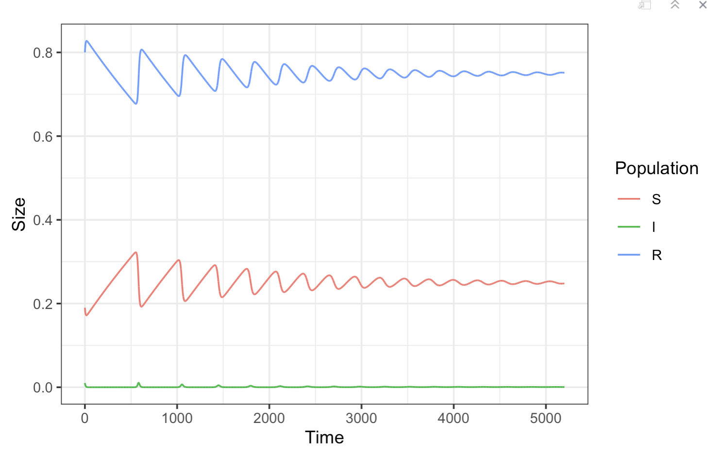
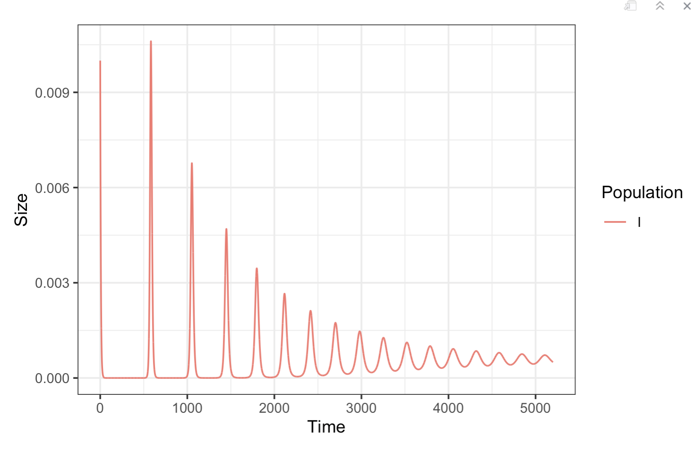
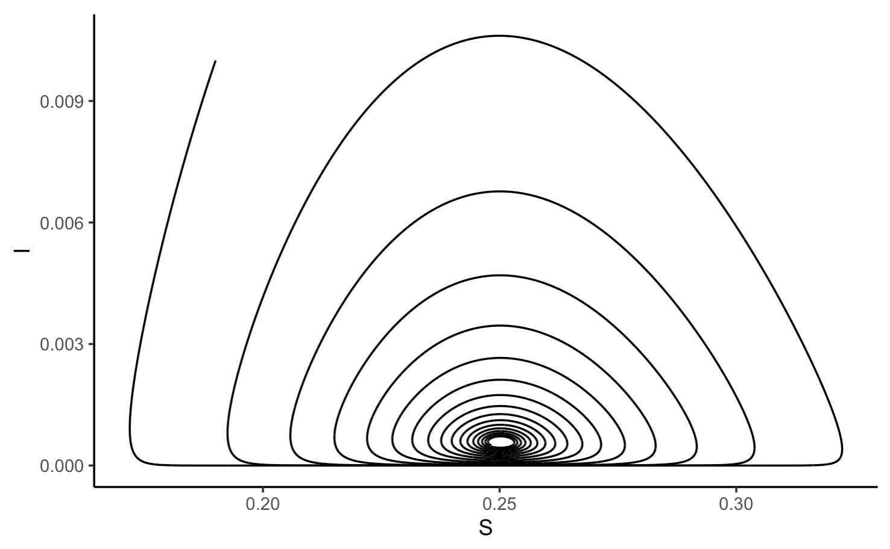
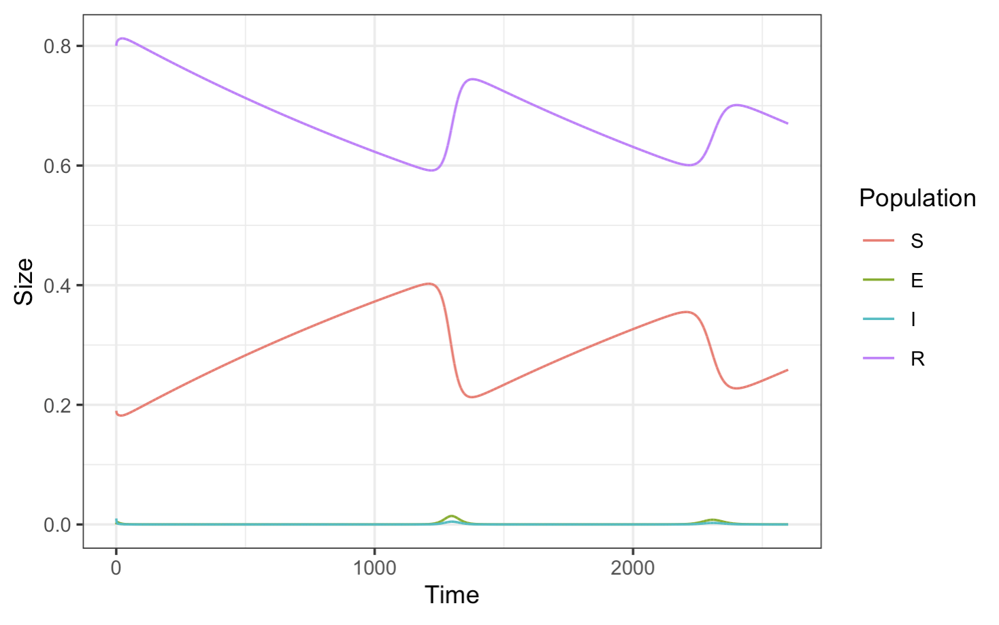
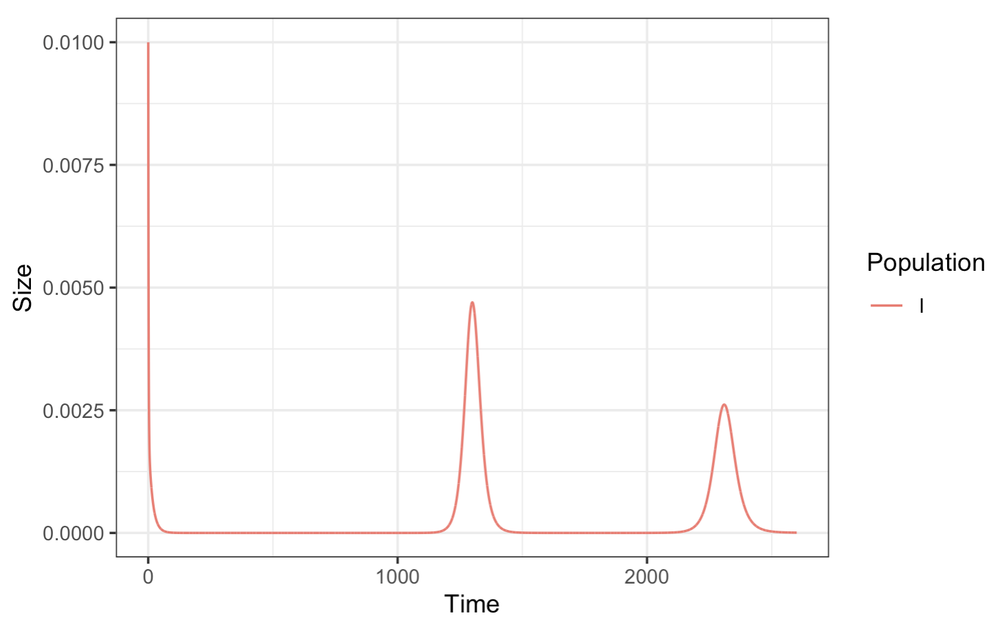
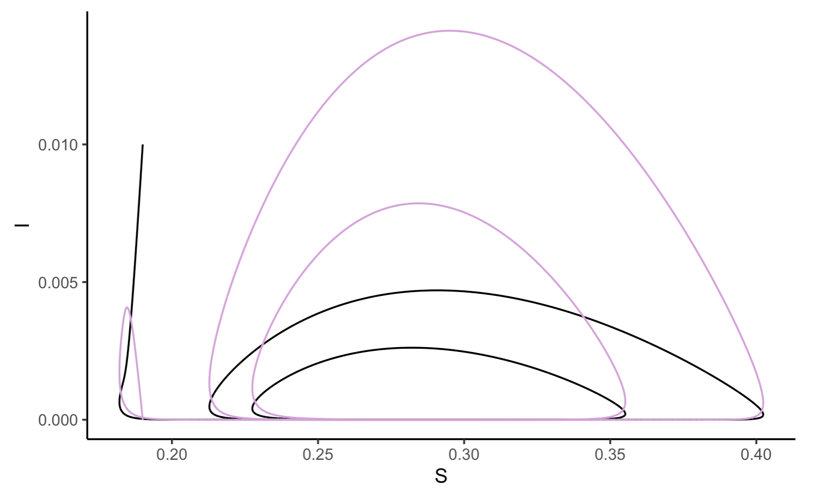
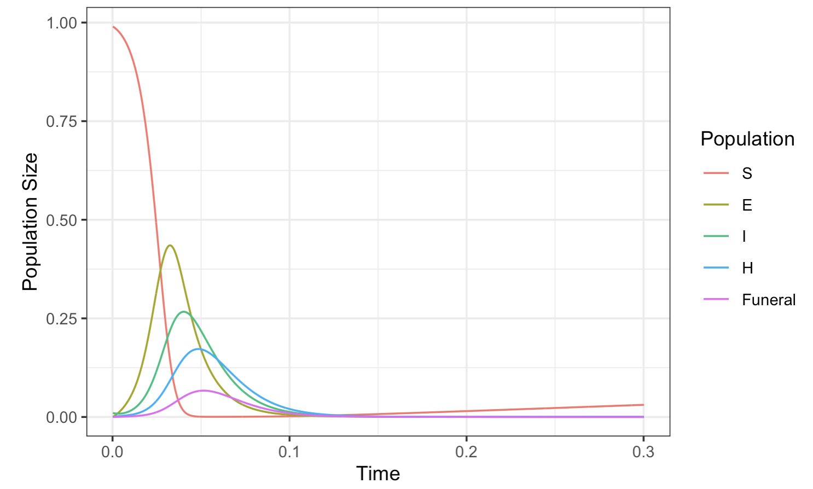

3.4 Class 7: Infectious Diseases
Before getting into any biology, let’s learn about making our own functions. Throughout the course, we’ve made use of R functions such as print(), c(), and ggplot(); defining our own functions allows us to
Defining our own functions allows us to perform actions over and over on multiple sets of inputs.
Below, let’s practice creating a function that takes one input, a list, and returns the number of things in it:
# A vector containing the contents of my fridge
refrigerator <- c("Apples", "Pears", "Bread", "Eggs", "Cheddar",
"Brie", "Lettuce", "Shallots", "Cabbage")
# The function definition
countFood <- function(fridge){ # Fridge is a local variable - it does not exist outside the function
numItems <- length(fridge)
print(paste("I have", numItems, "things in my fridge."))
}
# Two more fridges
myFriendsPantry <- c("olives")
fridge <- c("veal", "steak", "halloumi")
# Run the fridge function on all three sets of inputs:
countFood(refrigerator)## [1] "I have 9 things in my fridge."## [1] "I have 1 things in my fridge."## [1] "I have 3 things in my fridge."The countFood() function prints out a value, but doesn’t actually store anything to memory. Very often, we want to use the output from our function for downstream analysis. To save the oputput of our function, we need to include a return() statement.
For example, the function below generates a poly A tail sequence by pasting together a series of "A"’s, taking as input the length of the sequence to return:
# Define function
polyAtail <- function(length){
polyA <- rep("A", times = length) # Create a vector of A's
return(paste(polyA, collapse = "")) # Convert that vector into a string
}
# Run polyAtail() function on two inputs
polyA <- polyAtail(63)
polyA2 <- polyAtail(17)
# Print results
print(polyA)## [1] "AAAAAAAAAAAAAAAAAAAAAAAAAAAAAAAAAAAAAAAAAAAAAAAAAAAAAAAAAAAAAAA"## [1] "AAAAAAAAAAAAAAAAA"3.4.1 The SIR Model
In the function below, we implement the simplest form of the SIR model. The SIR model tracks the numbers of Susceptible, Infected, and Recovered individuals in a population, assuming a constant birth/death rate. :
SIR <- function(S, I, R, # Starting number of individuals, as a fraction of total population size
mu, B, gamma, # death/birth rate, contact lengths, recovery rate
simTime, step){
# Initialize total population size
N <- 1
# lists to store population sizes
sList <- c(S)
iList <- c(I)
rList <- c(R)
# loop through times
for (time in seq(simTime/step)){
# Calculate rates of change
dS <- (mu * (N - S) - B * I * S / N) * step
dI <- (B * I * S / N - (mu + gamma) * I) * step
dR <- (gamma * I - mu * R) * step
# Update population sizes based on rate of change
S <- S + dS
I <- I + dI
R <- R + dR
# Update lists
sList <- c(sList, S)
iList <- c(iList, I)
rList <- c(rList, R)
}
# Store results to data frame
df <- data.frame(
time = seq(length(sList)) * step,
S = sList,
I = iList,
R = rList
)
return(df)
}The function above returns a data frame containing time and population size for individuals of all categories.
We would also like to plot our data. Since we may want to do this over and over again for different inputs, it also makes sense to plot through a function. Notice that because we just want to create a plot here, we don’t need to save anything to memory. Therefore, this function does not have a return() statement:
# Define plotting function
plotSIR <- function(SIR_data){
# Convert to tall format
SIR_data_tall <- melt(SIR_data, id.vars = "time")
# Fix the column names
colnames(SIR_data_tall) <- c("Time", "Population", "Size")
# Plot, coloring by population
ggplot(SIR_data_tall, aes(x = Time,
y = Size,
color = Population)) +
geom_line() +
theme_bw()
}We can also make a function to just plot the infected individuals. This is identical to the function above, except that we subset our individuals while plotting (SIR_data_tall[SIR_data_tall$Population == "I", ]):
# Define plotting function
plotInfected<- function(SIR_data){
# Convert to tall format
SIR_data_tall <- melt(SIR_data, id.vars = "time")
# Fix the column names
colnames(SIR_data_tall) <- c("Time", "Population", "Size")
# Plot, coloring by population
ggplot(SIR_data_tall[SIR_data_tall$Population == "I", ], aes(x = Time,
y = Size,
color = Population)) +
geom_line() +
theme_bw()
}Now that we’ve defined our functions, we can run them on a set of data:
# Initial fraction of populations in each category
S <- 0.19
I <- 0.01
R <- 0.8
mu <- 1/(50 * 52) # Birth rate
B <- 2 # Contact lengths
gamma <- 0.5 # Recovery rate
simTime <- 52 * 100
step <- 0.1
SIR_data <- SIR(S, I, R, mu, B, gamma,simTime, step)
plotSIR(SIR_data)

As with other multi-population models, we can the trajectories of multiple populations as they relate to each other:

Note that in this model, there is a cyclical oscillation approaching an equilibrium as time goes on. The new spikes in case number are a result of new births in the population increasing the susceptible population.
3.4.2 SEIR
The SEIR model extends the standard SIR model by including a new phase - Exposed individuals. Exposed individuals have contracted the infection but are not yet symptomatic.
We’ve also added a couple new terms to make this model more realistic:
The parameter
pnow specifies the at birth vaccination rate. As a result, some fractions of individuals in each generation immediately enter the R category rather than S at birth.The parameter
alphaspecifies the rate of death induced by the disease. This quantity of individuals is removed from the I population. Becausealphacan in fact lead to population size change, we now need to recalculateNwith each time step, reflecting the changing total population size.
SEIR <- function(S, E, I, R, # Starting number of individuals
mu, B, gamma, sigma, alpha, p, # death/birth rate, contact lengths, recovery rate, disease progression rate, death rate from disease, vaccination proportion
simTime, step){
# Initialize the total population size (start at 100%)
N <- 1
# lists to store population sizes
sList <- c(S)
eList <- c(E)
iList <- c(I)
rList <- c(R)
# loop through times
for (time in seq(simTime/step)){
# Calculate rates of change
dS <- (mu * (N * (1-p) - S) - B * I * S / N) * step # (1-p) reflects vaccination
dE <- (B * I * S / N - (mu + sigma) * E) * step
dI <- (sigma * E - (mu + gamma + alpha) * I) * step
dR <- (gamma * I - mu * R + mu * N * p) * step # mu * N * p reflects vaccination
# Update population sizes based on rates of change
S <- S + dS
E <- E + dE
I <- I + dI
R <- R + dR
# Update lists
sList <- c(sList, S)
eList <- c(eList, E)
iList <- c(iList, I)
rList <- c(rList, R)
# Recalculate total population size
N <- sum(S, E, I, R)
}
# Store results to data frame
df <- data.frame(
time = seq(length(sList)) * step,
S = sList,
E = eList,
I = iList,
R = rList
)
return(df)
}Now, running on a population:
# Initializing proportion of individuals in each population
S <- 0.19
E <- 0.0
I <- 0.01
R <- 0.8
mu <- 1/(50 * 52) # Birth rate
B <- 2 # Contact lengths
sigma <- 0.2 # Time spent exposed prior to symptoms
gamma <- 0.5 # Recovery rate
alpha <- 0.1 # Death rate from sickness
p <- 0.2 # At Birth Vaccination Rate
simTime <- 52 * 50
step <- 0.1
# Run Simulation
SEIR_data <- SEIR(S, E, I, R, mu, B, gamma, sigma, alpha, p, simTime, step)
# Plot
plotSIR(SEIR_data)
Now, plotting just the infected population:

And lastly, overlaying the infected and exposed populations on the same figure:
ggplot(SEIR_data, aes(x = S, y = I)) +
geom_path() +
geom_path(data = SEIR_data, aes(x = S, y = E), color = "plum") +
theme_classic()
3.4.3 SEIHFR
You aren’t responsible for being able to reproduce the code below, but I showed this model in class and am including the code below.
The SEIHFR model was developed to model Ebola outbreaks. In addition to the categories of individuals included in the SEIR model, it also considers:
- Hospitalized individuals
- Deceased individuals who have not yet been buried at a Funeral.
Also note that this model accounts for different transmission rates for different categories of individuals. This is to say, terms such as B are separated into Bs, Be, Bi, etc. reflectedin that fact that different sectors of society behave differently based on whether they are sick or not.
SEIHFR <- function(S, E, I, H, Funeral, R, # F spelled out due to protected terms
Bs, Be, Bi, Bh, Bf, # All non-removed classes have beta parameters
gammaH, gammaF, gammaR, # Progression rate from infection to hospitalization, death, or recovery
# 1/gamma is the time to each of those fates
theta, # Θ - proportion infected that are hospitalized
lambda, #Λ - proportion of the sick that will die
etaF, etaR, # η - Progression from hospitalization to death or recovery
chi, mu, # time to burial
simTime, step){
N <- 1 # total population size
# Lists to store values of S, I, R
sList <- c(S)
eList <- c(E)
iList <- c(I)
hList <- c(H)
fList <- c(Funeral)
rList <- c(R)
for (time in seq(simTime/step)){
# Calculate rates of change
# Change in number of susceptible
# Interactions of susceptible individuals with Infected, Hospitalized, and dead individuals
dS <- (mu * (N * (1-p) - S)-(Bi * I + Bh * H + Bf * Funeral) * S / N) * step
# Change in number exposed
# First term: number of susceptible individuals that get exposed
# Same as dS with opposite sign
# Second term: number of exposed individuals that proceed to being infected
dE <- ((Bi * I + Bh * H + Bf * Funeral) * S / N - sigma * E) * step
# Change in number of infected
# First term: number of exposed that become infected
# Second term: progression from infection to hospitalization
# Third term: Recovery
# Fourth term: Death
dI <- (sigma * E - theta * gammaH * I -
(1 - theta) * (1 - lambda) * gammaR * I -
(1 - theta) * lambda * gammaF * I) * step
# Change in the number hospitalized
# First term: Progression from infection to hospitalization
# Second term: Progression from hospitalization to death
# Third term:
dH <- (theta * gammaH * I - # infection to hospitalization
lambda * etaF * H - # hospitalization to death
(1 - lambda) * etaR * H) * step # hospitalization to recovery
# Change in number dead and unburied
# First term: Progression from infection to death
dFuneral <- ((1 - theta) * lambda * gammaF * I + # Infection to death. I think this is a typo in the textbook
lambda * etaF * H - # hospitalization to death
chi * Funeral
) * step
# Change in number of recovered
dR <- ((1 - theta) * (1 - lambda) * gammaR * I + # infected recover
(1 - lambda) * etaR * H # Recovery
+ chi * Funeral) * step # burial
# Update population sizes
S <- S + dS
E <- E + dE
I <- I + dI
H <- H + dH
Funeral <- Funeral + dFuneral
R <- R + dR
# Update population size based on number dead
N <- sum(S, E, I, H, Funeral, R)
# Store to list
sList <- c(sList, S)
eList <- c(eList, E)
iList <- c(iList, I)
hList <- c(hList, H)
fList <- c(fList, Funeral)
rList <- c(rList, R)
}
# Store results in df
df <- data.frame(
time = seq(length(sList)) * step,
S = sList,
E = eList,
I = iList,
H = hList,
Funeral = fList,
R = rList
)
return(df)
}Now running the simulation:
# Initialize simulation parameters
S <- 0.99 # Susceptible
E <- 0.0 # Exposed
I <- 0.01 # Infected
H <- 0 # Hospitalized
Funeral <- 0
R <- 0.0 # Recovered
# Interaction length parameters
Bi <- 0.588
Bh <- 0.794
Bf <- 7.653
# Progression rate from infection
gammaH <- 1/5
gammaF <- 1/9.6
gammaR <- 1/10
# Progression from hospitalization to death or recovery
etaF <- 1/4.6
etaR <- 1/5
theta <- 0.80 # Hospitalization rate
lambda <- 0.81 # Death rate
# Time to burial
chi <- 0.5
mu <- 1/(50 * 52)
sigma <- 1/7 # Length that exposed stay exposed prior to becoming infected
simTime <- 52 * 3
step <- 0.1
SEIHFR_data <- SEIHFR(S, E, I, H, Funeral, R,
Bs, Be, Bi, Bh, Bf,
gammaH, gammaF, gammaR,
theta,lambda,
etaF, etaR,
chi, mu,
simTime, step)
# Convert to tall format
SEIHFR_data_tall <- melt(SEIHFR_data, id.vars = "time")
colnames(SEIHFR_data_tall) <- c("Time", "Population", "Size")
ggplot(SEIHFR_data_tall[SEIHFR_data_tall$Population != "R", ], aes(x = Time * step / 52,
y = Size,
color = Population)) +
geom_line() +
labs(y = "Population Size") +
theme_bw() +
xlab("Time")